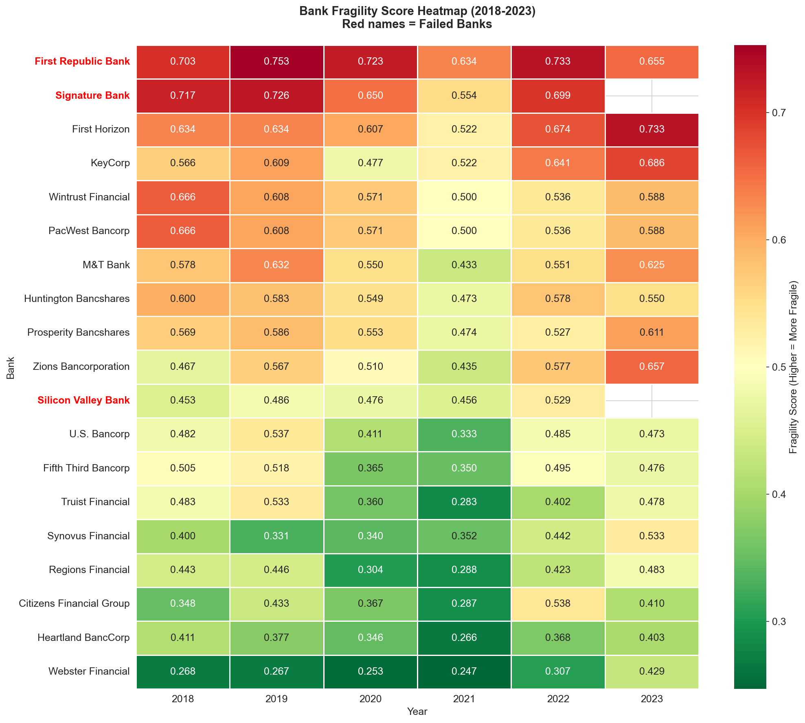
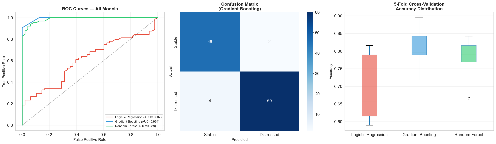
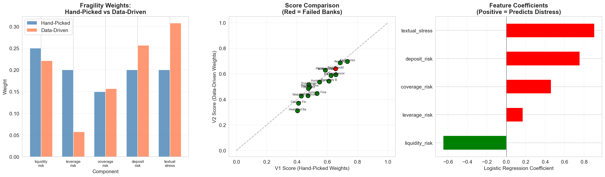
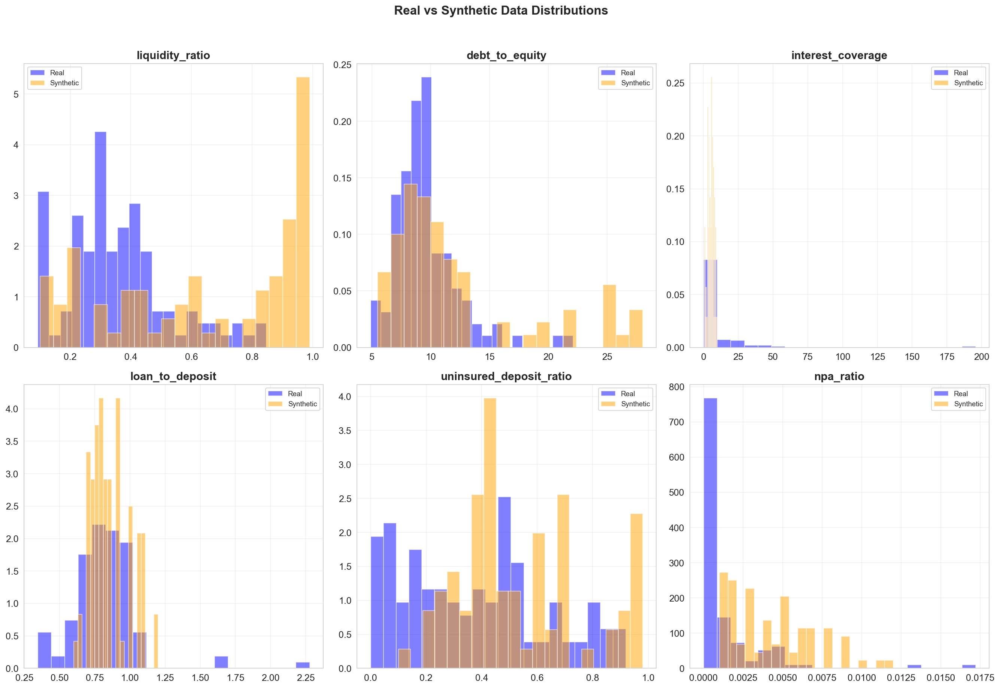

An early warning system that detects structural weakness in regional banks before stress becomes visible in market prices. Combining financial ratio analysis, NLP on SEC filings, and three generative AI components.
By the time headlines announce insolvency, the signals have already been filed quietly in dense financial statements. Liquidity ratios shift. Risk sections grow longer. The language changes from confident to conditional.
Manual multi-year ratio analysis per bank takes analysts weeks. Retail investors rarely do it at all.
Human oversight in identifying subtle trend shifts across hundreds of pages of 10-K filings.
Failure to recognize structural fragility before distress events — SVB collapsed with $209B in assets.
Base LLMs can summarize a 10-K, but they don't normalize stress, quantify vulnerability, or produce comparable scores.
Raw data flows through seven stages — from FDIC API calls to a ranked fragility index with interactive dashboards.
FDIC API, SEC EDGAR 10-K filings, Yahoo Finance stock prices
Liquidity, leverage, interest coverage, deposit risk ratios
Hedging density, VADER sentiment, risk section growth
ChromaDB vector search on chunked 10-K filings
Prompt-engineered multi-dimensional fragility assessment
80 LLM-generated bank profiles across 5 fragility archetypes
Logistic Regression, Gradient Boosting, Random Forest
The project implements three of the five available generative AI techniques.
Retrieval-Augmented Generation grounds LLM assessments in real SEC filing data.
Systematic prompts for multi-dimensional risk scoring via Groq/Llama.
LLM-generated financial profiles to address class imbalance (only 4 real failures).
Top banks ranked by data-driven fragility score (V2). Failed banks are highlighted — they should rank high if the system works.
| Rank | Bank | Fragility V2 | LLM Score | Status |
|---|---|---|---|---|
| 1 | First Horizon | 0.697 | 7/10 | Stable |
| 2 | KeyCorp | 0.687 | 7/10 | Stable |
| 3 | Signature Bank | 0.671 | — | Failed |
| 4 | First Republic Bank | 0.640 | 8/10 | Failed |
| 5 | PacWest Bancorp | 0.629 | 7/10 | Stressed |
| 6 | Zions Bancorporation | 0.593 | 8/10 | Stable |
| 10 | Silicon Valley Bank | 0.503 | — | Failed |
* Signature Bank and First Republic correctly ranked in top 4. SVB scored lower due to its unique depositor concentration risk not fully captured by standard ratios.
14 visualizations generated including interactive Plotly dashboards, heatmaps, ROC curves, and feature importance charts.




FDIC API, SEC EDGAR, Yahoo Finance, pandas
NLTK VADER, BeautifulSoup, regex extraction
Groq API, Llama 3.3 70B, ChromaDB, sentence-transformers
scikit-learn, Logistic Regression, Gradient Boosting, Random Forest
Matplotlib, Seaborn, Plotly (interactive HTML)
Jupyter Notebook, Python 3.12, GitHub Pages